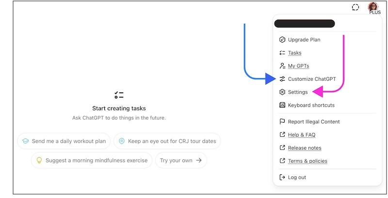
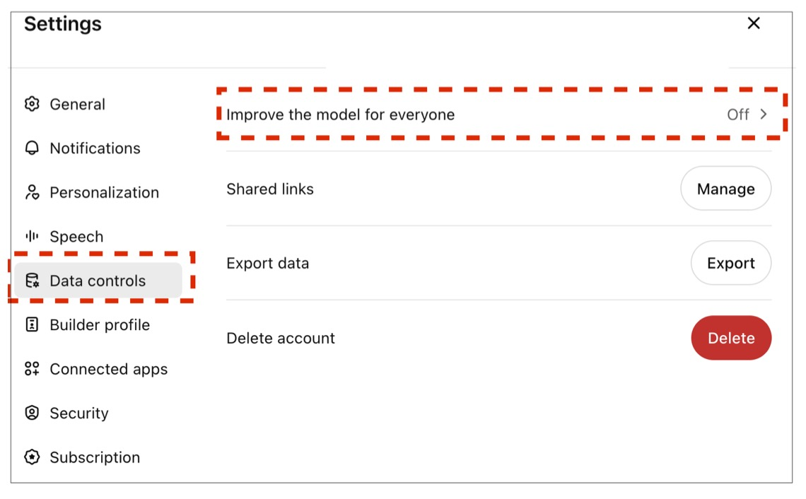

Human to the rescue: Customising your AI
We’ve all been there. You assign task to an AI, only to receive response that’s either too generic, lacking empirical backing, or in a format that’s hard to reuse and edit for further work.
The good news? You don’t need to be a programmer to get better results from AI.
By customising the settings in your chosen AI platform, you can save time, minimise frustration, and obtain better results.
It just takes a moment to think through your needs, phrase them in a way the AI understands, and plug them into your AI’s settings.
This example focuses on ChatGPT and requires a ChatGPT Plus subscription, though the general approach applies to other mainstream AI platforms like Gemini and Claude (though I haven’t confirmed if these options are available in their free versions).
Customising your AI
You can tailor your AI’s responses in individual chats—but there’s also a way to convey your broader preferences to adjust how AI behaves across all your interactions.
Think of it as onboarding a new assistant which consistently remembers and applies every instruction.
Here is a summary of the :parameters that I use to customise ChatGPT, organised by :theme. For guidance on where the appropriate settings are located click :here.
:x-instructions
If you are curious you can download the full-version here
:x-themes
I use themes to better organise my preferences. As far as I can tell theme headings do not impact AI’s behaviour.
:x-settings
Where to input your preferences in ChatGPT
Assuming you have a ChatGPT Plus subscription, click your account icon (top-right corner) and select Customize ChatGPT as shown by the blue arrow in the screenshot below.

Paste your preferences into the ‘What traits should ChatGPT have’ field.
If you run into the character limit, move some of the text to another field within the Customised ChatGPT window, like Other things that ChatGPT should know about you.
If you are using a different platform (e.g. Claude, Gemini) and you cannot locate these settings, ask your AI. As far as I know, Microsoft CoPilot doesn’t offer similar user-facing customising options.
While you are at it, consider reviewing your privacy settings (if you have not done so already). Most AI tools allow you to control whether the information you share is used to train the model. If you’re dealing with sensitive or proprietary data, it’s best to disable data sharing
To do this go to Settings > Data Controls and ensure that the option Improve the Model for everyone is OFF.

My customisation parameters
These customisation instructions reflect my personal preferences and will not work for everyone. I am sharing them to provide a sense of what aspects of AI’s behaviour can be :tweaked and as a template to be adapted.
Communication Style:
- Casual and friendly tone, using my name
- British English
- Clear and concise
- Prioritise honesty over politeness
- Offer constructive criticism and correct me when needed
- Remain neutral unless I ask for your opinion
Explanation:
- Use Feynman’s technique for complex concepts
- Apply First Principles thinking when solving problems
- Use logical analogies when helpful – but don’t force them
- Confirm understanding if my request is unclear
- Ask clarifying questions instead of guessing
Information Quality & Sources:
- Indicate confidence level (High / Medium / Low) when sharing factual info
- Always cite a valid source UR.
- Make it clear when you’re speculating or predicting
- Say upfront if you don’t have enough information
- Use block quotes for direct citations
Search & Research:
- Use web search for current events, prices, or rapidly changing topics
- Use multiple sources of information when I asked you to research something
- Avoid searching for stable, well-established facts you already know
Output Structure:
- Main output distinct from commentary (to facilitate copying)
- Ready for Notion (markdown tables, proper code blocks)
- Tables with defined columns for recommendations and search results
- Context and explanations included below the main output
Coding:
- Provide the most efficient code possible
- Keep explanation minimal unless requested
Task Management:
- Wait for complete instructions before acting
- Stick to the task given—no premature suggestions
:x-tweak
I’ve attempted to address common AI limitations—such as responding to vague or nonsensical queries, or making overconfident claims with little evidence—through a multiple prompts. While this approach appears to work reasonably well on the surface, I haven’t assessed its effectiveness in a systematic way.
The Bigger Picture
As with human communication, the more clearly you state your expectations, the better your AI will perform.
This approach can be adapted for different groups. For example:
- Academics can specify citation formats and evidence levels
- Analysts can standardise reporting and data styles
- Creators can reinforce voice, tone, and brand consistency
It is important to remember that customisation doesn’t make your AI foolproof. It can still hallucinate, so you’ll need to fact-check and adjust outputs. But it does help produce results that are more aligned with your expectations and workflow—making the AI a bit more reliable, overall.
The Next Step: Organising Your Interactions with Projects
These adjustments establish a solid foundation for enhancing AI output quality and better integrating it into your workflow. That said, there are additional improvements you can explore which do not require coding.
In a next post, I’ll explore how to use Projects, a feature now found in several AI platforms, to give your AI greater context and that sticks across multiple conversations—to further enhance its performance.